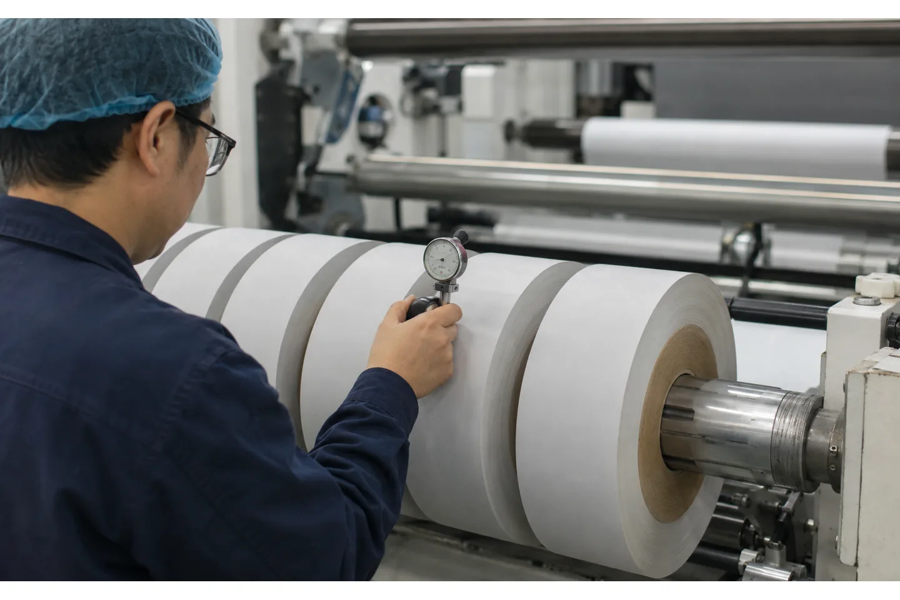

Published August 16, 2026 | By HDPTH Technical Editorial Team

Taper tension is one of the most misunderstood lines in a slitter rewinder specification. It is often reduced to a single value such as “20% taper,” even though that number has no useful meaning without the starting tension, diameter range, measurement method and material trial. For procurement teams, the goal is not to buy a named feature. It is to receive finished rolls that stay intact in storage, transport and the next process.
The principle is straightforward: as a rewind roll grows, the control system reduces the winding force or torque according to a defined profile. The engineering challenge is choosing a profile that holds the layers together without crushing the core or trapping enough air to create a soft, telescoping roll.
What taper tension controls
In the rewind zone, web tension is the force carried by the strip as it enters the finished roll. Rewind torque is applied through the shaft or winding surface. Because the roll radius changes continuously, a constant torque does not create a constant web force. A taper strategy changes the command as the diameter estimate rises so the roll builds with the desired hardness and stability.
DFE describes typical slitter-rewinder zones as unwind, slitting and rewind, with the rewind tension generally decreasing as roll diameter increases to reduce the risk of crushed cores and other defects. The exact curve is not universal. It is a process recipe that should be selected with the material, core and winding method in view.
Taper tension is not a cure for every roll defect
Telescoping, starring, starring at the core, wrinkles and soft edges can all be associated with winding tension, but they may also come from poor web guiding, uneven thickness, trapped air, core runout, differential-shaft friction, incorrect nip pressure or a damaged knife. If a supplier promises that taper tension alone will solve every roll problem, ask for the underlying test plan.
Use the defect pattern to guide the investigation. A hard core with soft outer layers suggests one kind of profile problem; a roll that walks sideways suggests alignment, guiding or layer-to-layer friction; a crescent-shaped hardness profile may point to widthwise tension variation. The acceptance protocol should identify which variables are controlled and which are outside the machine supplier’s responsibility.
Choose the measurement and control architecture
A taper function needs a reliable estimate of roll diameter or wound length and a way to change motor torque, shaft speed or another winding variable. Diameter can be calculated from line speed and wound length, measured by a sensor, or derived from the machine’s roll geometry. Ask how the system handles a new core, a roll change, slip, a web break and a mismatch between calculated and actual diameter.
Closed-loop tension feedback with load cells is valuable when material tension must be measured directly. The controller still needs sensible limits, filtering and a stable drive response. A recipe screen should make the starting tension, taper profile, diameter range and acceleration limits visible to an authorised operator. If the control is hidden in a fixed PLC value, troubleshooting and repeatability become harder.

Match the profile to the material and core
Thin PE film, PET film, paper, nonwoven and laminated webs respond differently to compression and air. A soft extensible material may need a gentler buildup to avoid stretching; a stiff paper roll may need enough pressure to remove air and hold the layers together. Core strength, core diameter, finished diameter, width and roll weight also constrain the safe operating window.
Send the supplier the complete range rather than the nominal job: minimum and maximum thickness or GSM, parent-roll and finished-roll diameters, core ID and wall construction, slit widths, roll weight, target speed, allowable hardness range if known, and how the finished roll will be used. If the line runs several materials, request separate recipes and define who approves the process window.
Set up a controlled tuning trial
A useful trial changes one variable at a time. Start with a conservative tension and a documented taper curve, then run a representative roll at a stable speed. Measure hardness or firmness from core to outer diameter and across the roll width, inspect end faces for telescoping, and check the roll in the downstream process. Compare the result with the actual defect and handling criteria rather than with an arbitrary “perfect” number.
Then test acceleration, deceleration and a job change. Those transitions can produce a different layer structure from steady-state running. Keep a record of material lot, moisture or conditioning where relevant, core batch, knife setup, nip pressure, speed, tension, diameter and roll observations. The resulting recipe is more valuable than a generic taper percentage printed in a brochure.
Want to avoid a “percentage taper” guess?
Send core, diameter, material and finished-roll requirements. HDPTH can help turn the winding problem into a measurable profile and FAT plan.
Discuss your project with HDPTHWrite taper-tension FAT acceptance criteria
At FAT, define the test roll and the measurement method before the supplier starts. Verify the tension signal or calculated value, the diameter feedback, the minimum and maximum setpoints and the behavior at the core, mid-roll and full diameter. If the machine uses a lay-on roller, record its pressure and position because nip and torque interact.
Check several slit widths, not only a full-width roll. Confirm that finished rolls can be unloaded without edge collapse, remain stable after a rest period and meet the agreed downstream trial. The factory acceptance test checklist should include defect photographs, measurements, the final recipe and a list of any conditions that were not reproduced at the factory.
What belongs in the project RFQ
Use plain data fields: web material, thickness or GSM, parent roll, finished diameter, core, slit-width range, speed, roll weight, winding method, required tension range and quality criteria. Ask for a control description that explains how tension, torque, diameter and nip are related. Request the alarm list for over-tension, under-tension, sensor failure, diameter mismatch and roll-end conditions.
Also ask what data the operator can see and export. A trend of tension, speed and calculated diameter is useful during commissioning and after a customer complaint. The quotation should state whether material trials, sample rolls, spare load cells, software backup and remote support are included. Those details turn taper tension from a marketing checkbox into a verifiable process capability.
HDPTH’s project-based configuration path
HDPTH’s slitting and rewinding lines are reviewed against the customer’s material and output requirements. A serious inquiry should include the roll drawings and desired test. The engineering team can then consider the unwind brake or drive, web guide, slitting head, rewind shaft, lay-on roller and control architecture together.
For overseas buyers, request a digital copy of the approved recipe, electrical documentation, operating sequence and FAT record before shipment. Prepare the installation area using the site-preparation checklist. A well-defined taper-tension handover reduces the temptation to change several settings at once after arrival.
Turn the requirement into an RFQ line item
Before comparing quotations for taper tension on slitter rewinders: a practical buyer’s guide, put the operating requirement in a form that two suppliers can price and test in the same way. State the material family and its full working range, the parent-roll condition, the finished-roll drawing, the core, the number of lanes, the target speed and the changeover pattern. If the job includes more than one substrate, list each substrate separately instead of using a single average value.
- Define the quality result the plant must accept, such as edge condition, roll profile, web presence, winding stability or commissioning evidence.
- List the measurement method, sample size, inspection locations, conditioning time and who signs the result.
- Ask for the relevant tooling, sensor, tension, guiding, drive and guarding details in the supplier response.
- Require a FAT trial on representative material and a clear method for repeating the setup after cleaning, transport or a material change.
This structure helps procurement compare like with like and gives production, maintenance and quality teams a shared handover record. It also makes later troubleshooting faster: the team can see whether a result changed because of the material, the recipe, the measurement method or the machine. A concise requirement sheet is usually more valuable than a long list of headline specifications with no acceptance method.
Buyer FAQs
What is taper tension on a slitter rewinder?
It is a control strategy that changes rewind tension or torque as the finished-roll diameter grows, normally reducing the effective winding force to protect the core and finished roll.
Is a higher taper percentage always better?
No. The right profile depends on the material, core, width, diameter, speed, nip and downstream use. A high reduction can make the outer layers too soft or allow telescoping.
How should taper tension be verified?
Run actual production material through the core-to-full-diameter range, record tension and diameter, measure the roll profile, inspect end faces and repeat the test through acceleration and job change.
Does taper tension replace load-cell feedback?
Not necessarily. Taper is the desired profile; load cells can provide direct tension feedback. The controller, drive, diameter estimate and limits must be designed as a complete system.
What information should I give a supplier?
Provide material and thickness, parent and finished diameters, core construction, slit widths, speed, roll weight, winding method and the defects or handling requirements the roll must avoid.
Sources
- Dover Flexo Electronics: Slitter-Rewinder Tension Control
- Amtech Electronics: Slitter Rewinder and taper/constant tension overview
- Nishimura Seisakusho: slitting and rewinding process overview
Specify the roll you need, not just the taper feature
Share your roll drawings, materials, widths and handling criteria with HDPTH. The engineering review can define tension, torque, nip and measurement requirements as one winding system.
Send an RFQ to HDPTH